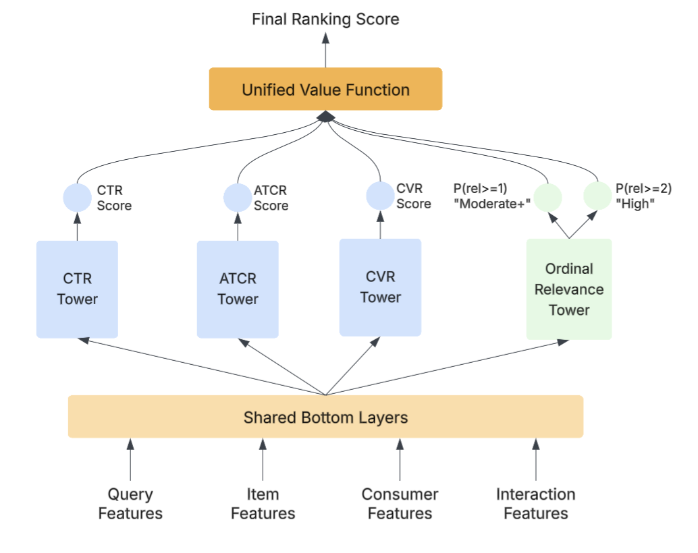
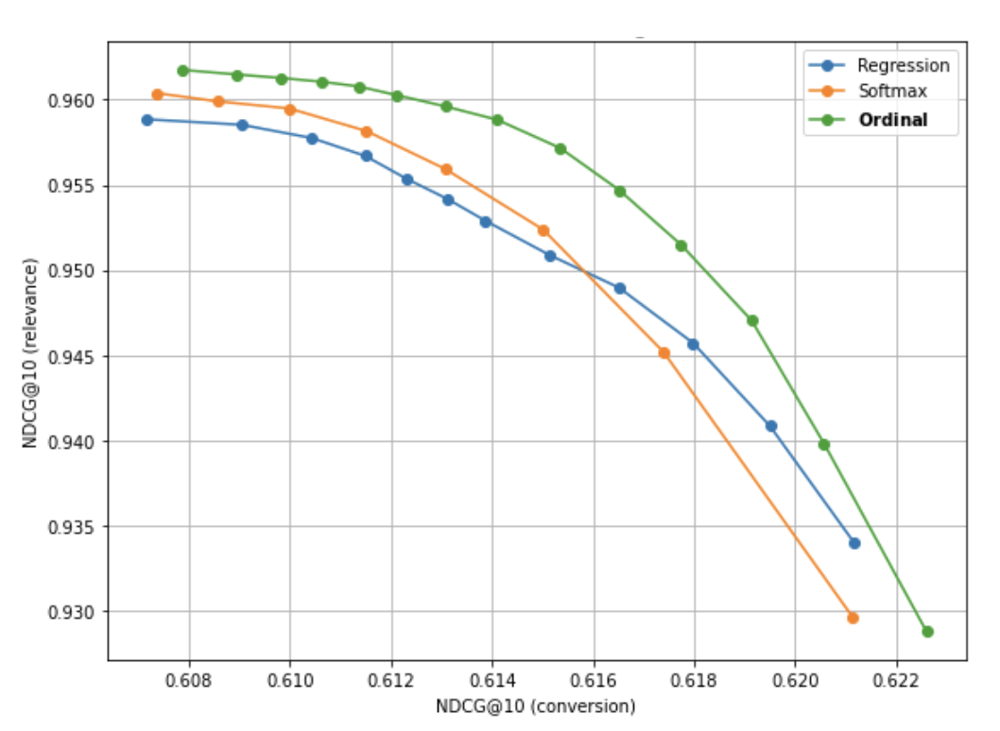

目录 · 9 节
1它到底在解决什么问题？2整体结构：一个模型、四个头、一个打分公式3序数相关性头：为什么预测“至少到几级”4统一打分公式：权重怎么起作用5标签从哪来：60 万条人工标注扩到 1 亿条6实验：离线、权衡曲线和线上7我认为它的局限8一个搜索团队可以怎么试9评价分享 SHARE
做电商搜索排序、又被“点击高但不对题”的结果困扰的团队值得读这篇，它给了一个上线成本很低的做法，而且有三周 A/B 的正向结果。核心思想一句话：用微调过的小 LLM 离线给 1 亿多个 query-商品对打三级相关性标签，在现有多任务排序模型里加一个“至少到几级”的序数相关性头，再把它和点击、加购、转化的预测按权重加成一个总分。离线相关性 NDCG@10 从只用行为信号时的 0.812 提到 0.962，点击、加购、转化的 AUC 基本不变；DoorDash 线上三周 A/B 里加购率（ATCR）+1.16%、CVR +1.10%、总订单额（GOV）+0.50%，都显著。
它到底在解决什么问题？
先看一个示意场景。用户在生鲜外卖 app 里搜“牛奶”，排序模型只学点击和下单，结果把正在打折的巧克力牛奶饼干排到第二位：它便宜、点的人多，但并不是用户要找的牛奶。时间长了，用户会改写 query、翻页，觉得搜索“不懂我”。
论文把原因归为两点。第一，只用行为信号优化，热门、价格锚定、字面重合的商品会被系统性抬高。第二，可靠的语义相关性监督很少：人工标注贵、慢，商品库有几百万商品和大量长尾 query，标不过来；行为信号多，但有位置偏差、曝光偏差和反馈循环。
LLM 能给出接近人工的相关性判断，但直接用在线上有三个障碍：推理太贵、延迟太高；微调后的 LLM 分类器对标签分布敏感，可能系统性地偏向某一级；LLM 的原始分数还得校准，才能和现有的行为目标放在一起排序。
整体结构：一个模型、四个头、一个打分公式

| 部件 | 输入 | 做什么 | 输出 |
|---|---|---|---|
| 共享底层 | query 特征（embedding、预测类目、品牌）、商品特征（embedding、价格、类目、品牌、历史行为统计）、用户历史行为、交互特征（多个文本字段的 BM25、历史 query-商品转化率、字符串相似度、用户-商品和用户-类目的历史互动） | 所有任务共用的表示 | 共享向量 |
| 三个行为塔 | 共享向量 | 分别预测点击、加购、转化 | 、、 |
| 序数相关性塔 | 共享向量 | 预测相关性“至少到 1 级”“至少到 2 级”的概率 | 两个概率，合成一个相关性分 |
| 统一打分 | 上面四个分数 | 按权重线性加和 | 最终排序分 |
作者强调加相关性头几乎不增加计算：主要开销在共享底层的大规模 embedding 查表，相关性塔只用已有特征的子集，而且四个目标在一次前向里算完，不用另起服务。线上完全不调用 LLM，LLM 只在离线产标签。
序数相关性头：为什么预测“至少到几级”
相关性分三级：0 不相关，1 中等相关，2 高度相关。作者认为三级比二分类能表达更细的关系，又比更多级好标；区分“相关和不相关”关系到用户信任，区分“高度相关”关系到在多个业务目标竞争时能不能把最对题的放前面。
怎么做？ 相关性塔不输出三类的 softmax，而是输出两个概率： 是“至少中等相关”的概率， 是“高度相关”的概率。相关性分取两者之和：
这个和正好等于相关性等级的期望值，范围在 0 到 2 之间。
举一个示意例子：某商品 ，，相关性分是 1.5。换成三级的概率：不相关 0.1，中等 0.9−0.6=0.3，高度 0.6；期望等级 0×0.1+1×0.3+2×0.6=1.5，和两个概率直接相加一致。
为什么比 softmax 或回归好？ softmax 把三级当成互不相关的类别，所以“把 2 级错判成 0 级”和“错判成 1 级”受的惩罚一样；回归把等级当连续值，又假设 0→1 和 1→2 的距离相等。序数头保留了“等级有先后”这层结构，输出又是概率，可以直接卡阈值做过滤或分组展示。论文提到相关性分除了进打分公式，也可以用在结果过滤和界面分组上，比如 低于某个阈值的结果直接不展示， 高的放进“最匹配”一组。实验里三者的差距不大，后面会看到。
统一打分公式：权重怎么起作用
最终排序分是：
都在 0 到 1 之间，相关性的权重就是剩下的部分。作者只描述了调参方式：先做多组离线测试，再在线上开多组实验来调这几个权重。
再举一组示意数字（我编的，不是论文结果），回到“牛奶”：饼干 A 的预测点击 0.10、加购 0.04、转化 0.02、相关性分 0.6；纯牛奶 B 分别是 0.06、0.03、0.015、1.8。
- 只看行为（，相关性权重 0）：A 得 0.072，B 得 0.045，A 排前面。
- 给相关性 0.1 的权重（）：A 得 0.05+0.008+0.004+0.06=0.122，B 得 0.03+0.006+0.003+0.18=0.219，因为 B 的相关性分高出 1.2，所以 B 反超。
这说明一点：行为概率通常只有零点零几，相关性分却在 0 到 2 之间，两类分数量级不同，0.1 的相关性权重在总分里可能已经占大头。论文说“适度的相关性权重就能大幅提升相关性”，读的时候要记得这个“适度”是相对量级而言的，换一个业务的点击率水平，合适的权重会很不一样。
标签从哪来：60 万条人工标注扩到 1 亿条
训练相关性头需要大量三级标签。作者沿用同团队之前的流程，分四步：
| 步骤 | 做什么 | 目的 |
|---|---|---|
| 1. 人工种子 | 收集约 60 万条 query-商品对的人工三级标注 | 作为基准 |
| 2. 用行为审计 | 人工标 0（不相关），但这个商品在该 query 下加购率和转化率都排进前 50% 的，交给更大的 LLM（如 GPT-4o、o3）用更细的提示词重新判 | 找出可能标错的“不相关” |
| 3. 类目调和 | 人工和审计 LLM 意见不一致时，看 Q2T（作者团队的 query 到类目预测模型，给每个 query 预测一组相关类目）：商品类目在预测集合里，就取两者中较高的分；否则取较低的分 | 用第三方信号裁决分歧 |
| 4. 微调小模型批量打标 | 在审计后的人工标注上微调 gpt-4o-mini，再给 1 亿多个 query-商品对打标 | 把成本降到可以全量跑 |
微调后的模型在 10.5 万条留出数据上，和人工标注三级完全一致的比例是 89%，相差不超过一级的比例是 98%。作者还提到，微调效果对训练集的标签分布很敏感，他们按线上真实的相关性比例来采样训练数据，分类才稳定，比例本身只描述为“模仿线上分布”。
89% 和 98% 之间差 9 个点，说明大部分错误发生在相邻两级之间，“高度相关判成不相关”这类严重错误最多 2%。这对序数头是个友好的条件：相邻两级混淆时，两个阈值概率里只有一个的训练目标会被带偏，比如把 2 级标成 1 级， 的目标仍然是 1，只有 受影响。
这一步值得注意的是第 2 步的思路：行为信号不直接当标签，只用来挑出值得复查的人工标注。高转化却被标“不相关”的样本，要么是人标错了，要么是 query 有隐含意图，交给更强的模型复核比直接信任任何一方都稳妥。
实验：离线、权衡曲线和线上
离线数据是 200 万个 query-商品对，相关性标签来自上面的微调 LLM。行为任务看 AUC 和 NDCG@10，相关性看按相关性头预测排序的 NDCG@10。对照组有四个：只训行为目标的 MTL-Engagement（没有相关性头，用 CTR 预测充当相关性分）、相关性用三类 softmax 的 MTL-Softmax、相关性当连续值用均方误差训练的 MTL-Regression，以及序数头只当辅助任务、最终打分不用相关性分的 Auxiliary Only。
| 模型 | 点击 AUC | 加购 AUC | 转化 AUC | 转化 NDCG@10 | 相关性 NDCG@10 |
|---|---|---|---|---|---|
| MTL-Engagement | 0.840 | 0.852 | 0.855 | 0.628 | 0.812 |
| MTL-Softmax | 0.838 | 0.851 | 0.854 | 0.625 | 0.961 |
| MTL-Regression | 0.839 | 0.851 | 0.854 | 0.627 | 0.959 |
| Auxiliary Only | 同下 | 同下 | 同下 | 同下 | 0.823 |
| 本文（序数头） | 0.838 | 0.851 | 0.855 | 0.627 | 0.962 |
三个行为任务的 AUC 最多差 0.002，转化 NDCG 差 0.001。这说明加相关性头本身不拖累行为预测。相关性 NDCG 从 0.812 提到 0.962，但 softmax 0.961、回归 0.959，三种做法几乎一样，这说明大头的收益来自“有一个显式相关性头”，序数形式本身只多了一点点。Auxiliary Only 只有 0.823，比基线高 0.011，这说明相关性只当辅助任务帮不了多少，必须进入最终打分。

权衡实验只把相关性分和转化预测线性加权，扫描相关性权重。读图约：转化 NDCG 在 0.614 附近时，序数头的相关性 NDCG 约 0.959，softmax 约 0.954，回归约 0.953；曲线左端三者都在 0.958 到 0.962 之间，右端在 0.929 到 0.934 之间。这说明序数头的优势主要在曲线中段，也就是实际会选的折中区间，两端差别很小。曲线左段很平：从左端往右，转化 NDCG 涨了约 0.006，序数头的相关性 NDCG 只掉了约 0.003。这和作者“适度权重换来大幅相关性提升、行为损失很小”的说法一致。
线上 A/B 跑了三周，实验组用本文模型替换原排序模型：
| 指标 | 相对提升 | p 值 |
|---|---|---|
| 加购率 ATCR | +1.16% | 0.01 |
| 转化率 CVR | +1.10% | 0.01 |
| 总订单额 GOV | +0.50% | 0.03 |
这说明在这个场景里，把相关性放进排序不仅没牺牲行为指标，还把加购和转化一起带上去了，符合“不对题的结果其实也在损失成交”的直觉。
我认为它的局限
第一，离线相关性评测有循环。训练标签和评测标签都来自同一个微调 LLM，相关性 NDCG 衡量的是“模型多像这个 LLM”，而不是多像真实用户。基线 0.812 还是用 CTR 预测充当相关性分得到的，0.962 对 0.812 的差距一部分来自基线本来就不是为这个指标设计的。
第二，线上只报了行为指标，没有报相关性本身的线上变化，比如人工抽检的不相关率或 query 改写率。对照组只描述为原来的排序模型，相关性权重的最终取值也只说是多组线上实验调出来的，别人很难复现同样的权衡点。
第三，两个阈值概率理论上要满足 ，否则拆出来的“中等相关”概率会是负数。论文没说怎么保证这个顺序；自己实现时要用共享打分加有序阈值之类的结构，或者加约束。
一个搜索团队可以怎么试
- 先做标签。抽几万条 query-商品对做人工三级标注，按本文第 2、3 步用行为信号和类目模型挑出可疑样本复核，再微调一个小 LLM，在留出集上看三级一致率和相差不超过一级的比例。
- 训练集按线上真实的相关性比例采样，检查微调模型是否系统性偏向某一级。
- 在现有多任务排序模型上加一个序数相关性塔，只用已有特征，确认行为 AUC 不掉。
- 离线扫相关性权重，画出类似图 2 的曲线，在曲线开始明显下弯之前选点；注意先看清行为分和相关性分的量级。
- 线上 A/B 除了加购、转化、订单额，再加一个人工抽检的不相关率或改写率，确认相关性确实变好了。
评价
把 LLM 当离线标注器、把相关性当成排序公式里一个可调的分项，是一条便宜而实用的路，序数头本身的贡献很小。
| 维度 | 评价 |
|---|---|
| 问题重要性 | 高。电商搜索普遍有“点击高但不对题”的问题 |
| 方法创新性 | 低到中。多任务排序、序数回归、LLM 产标签都不新，组合方式和审计流程有参考价值 |
| 实验证据 | 中。有三周显著的线上 A/B，但离线相关性评测用同源 LLM 标签，序数头相对 softmax 的优势只在权衡曲线中段 |
| 工程成本 | 低。线上不调 LLM，只多一个塔；主要成本在离线产 1 亿条标签 |
| 是否值得尝试 | 已有多任务排序、想补相关性的电商搜索团队值得试，先从标签流程和权重扫描做起 |
读完这篇，你觉得
夜读鸮记下了，谢谢你的反馈。
点一下即可，无需登录；再点一次撤回。只统计匿名次数，不记录你是谁。
讨论
欢迎补充实验细节、复现经验或不同看法。需 GitHub 登录。
正在加载讨论…